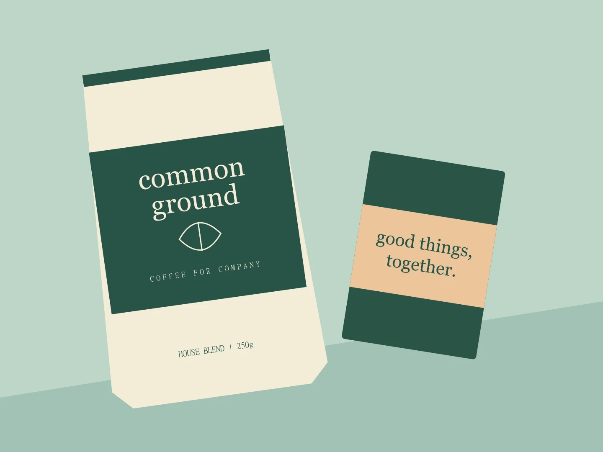
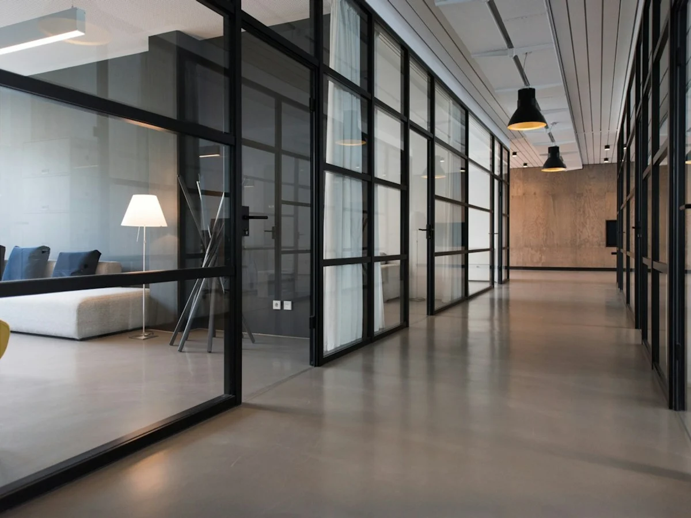

Get to the heart.
We agree the brief, audience, references, constraints and decision makers. One shared discovery document sets the starting point.

FEATURED / COMMON GROUNDI help independent businesses and cultural organizations find their voice — and a visual identity worth remembering.
Based in London · GMT/BST
Working thoughtfully, everywhere.
A fictional designer. Six original, self-initiated concept projects.
A few different ways to make a difference.

ROOM FOR A DIFFERENT PERSPECTIVE / STOCK STUDIOA LITTLE ABOUT ME
I'm Nora, an independent designer interested in the space where a useful idea becomes a distinctive identity. I like good questions, considered type and systems that make everyday decisions easier.
I work best alongside founders, editors and small creative teams who care about what they're putting into the world. My approach brings strategic thinking and hands-on design into the same conversation.
This is a fictional profile. Client lists, experience, awards and real studio details are awaiting owner-supplied content. The projects are concept work, not commissioned engagements.
Download the concept capabilities briefA clear brief, the right collaborators
and a system that holds together.
A real identity-project testimonial belongs here.
Client name, role, company and permission to publish are required.Four stages. A shared direction.
No mysterious disappearing acts.
We agree the brief, audience, references, constraints and decision makers. One shared discovery document sets the starting point.
We align on positioning, two creative territories and practical success criteria before developing the visual system.
Concepts become a coherent system and real applications. Two consolidated refinement rounds are included in the proposed scope.
After written approval, receive agreed SVG/PDF assets, color and type guidance, print specifications and an organized handoff. Launch support is scoped together.
Illustrative engagement: one nominated approver, consolidated written feedback within three working days, and written approval at each phase. Production, licensing and extra revision rounds are agreed before work starts.
A real campaign or publication testimonial belongs here.
No client quotes or measurable results have been supplied.SOMETHING GOOD STARTS WITH A CONVERSATION
Tell me a little about your project. A thoughtful brief is a very good place to start.
hello@example.comDemo address, not monitored. Proposed response expectation: two working days, to be confirmed by the portfolio owner.
Local preview only: your details stay in this tab, are not stored, and are never submitted. A real contact address and delivery service are required before launch.